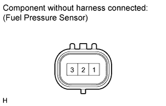

COMMON RAIL > INSPECTION |
| 1. INSPECT COMMON RAIL ASSEMBLY RH |
Inspect the fuel pressure sensor.
 |
Measure the resistance according to the value(s) in the table below.
| Tester Connection | Condition | Specified Condition |
| 1 - 2 | 25°C (77°F) | 16.4 kΩ or less |
| 2 - 3 | 25°C (77°F) | 3 kΩ or less |